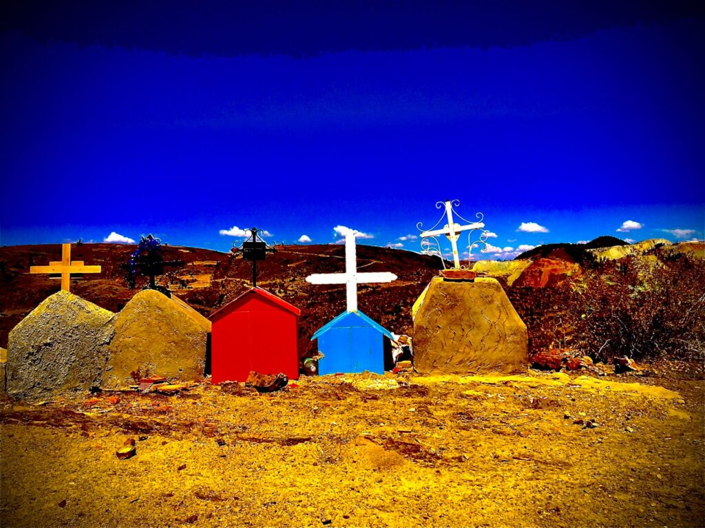
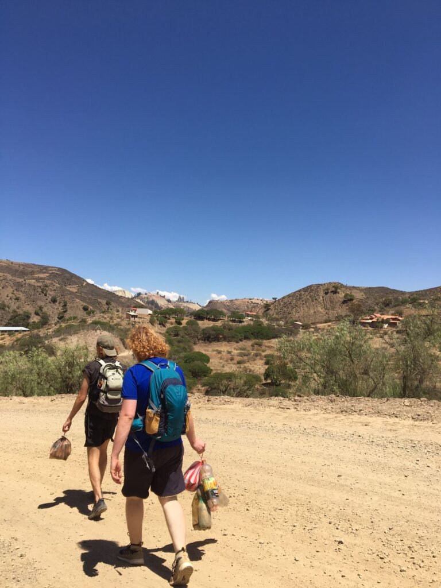
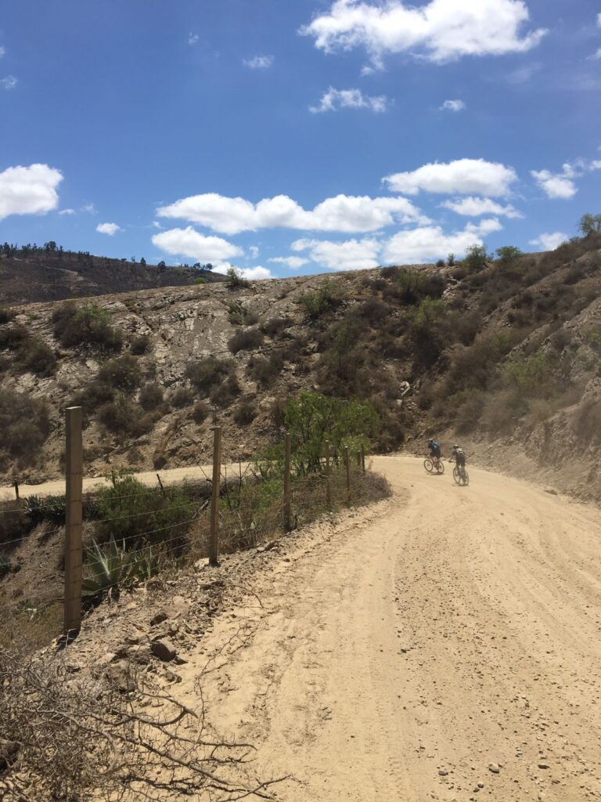
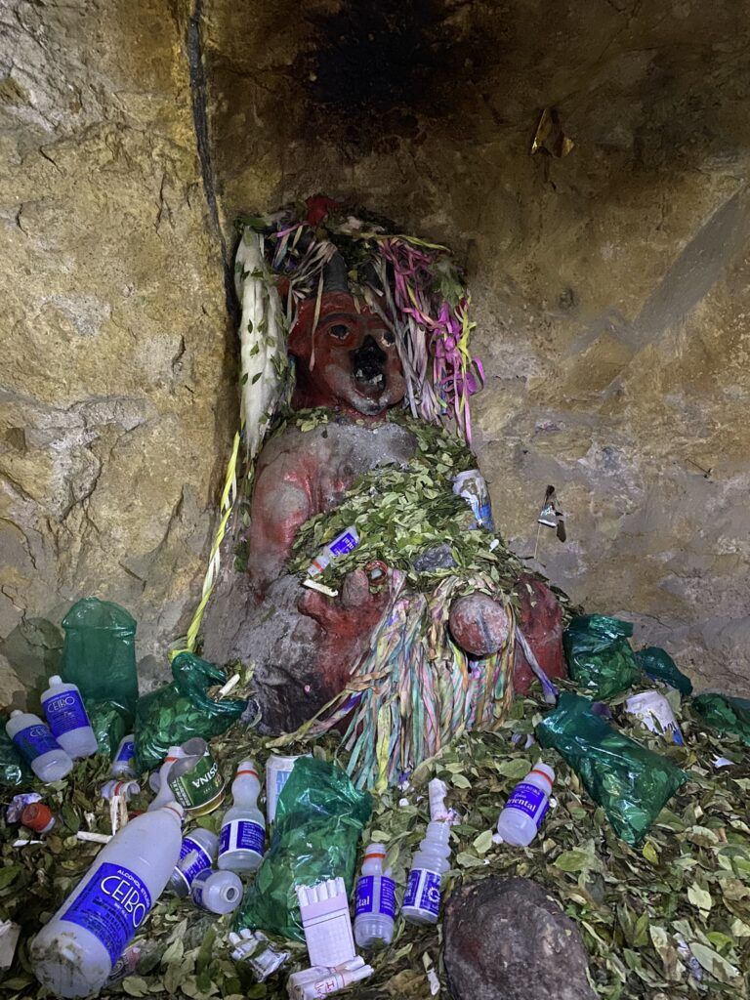
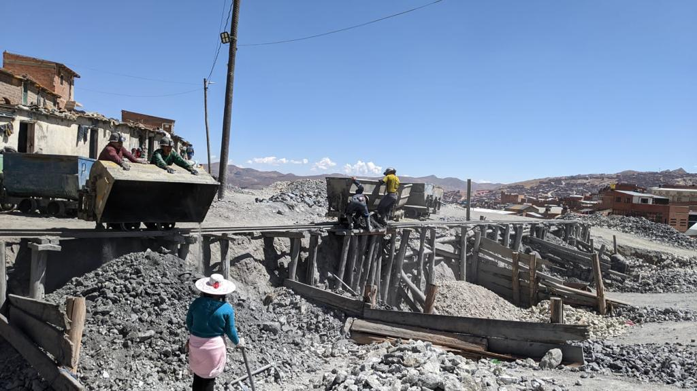
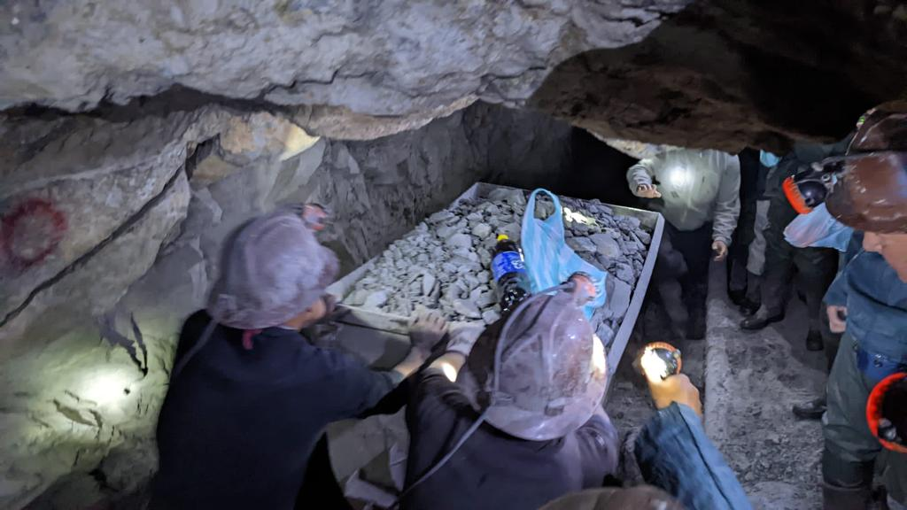
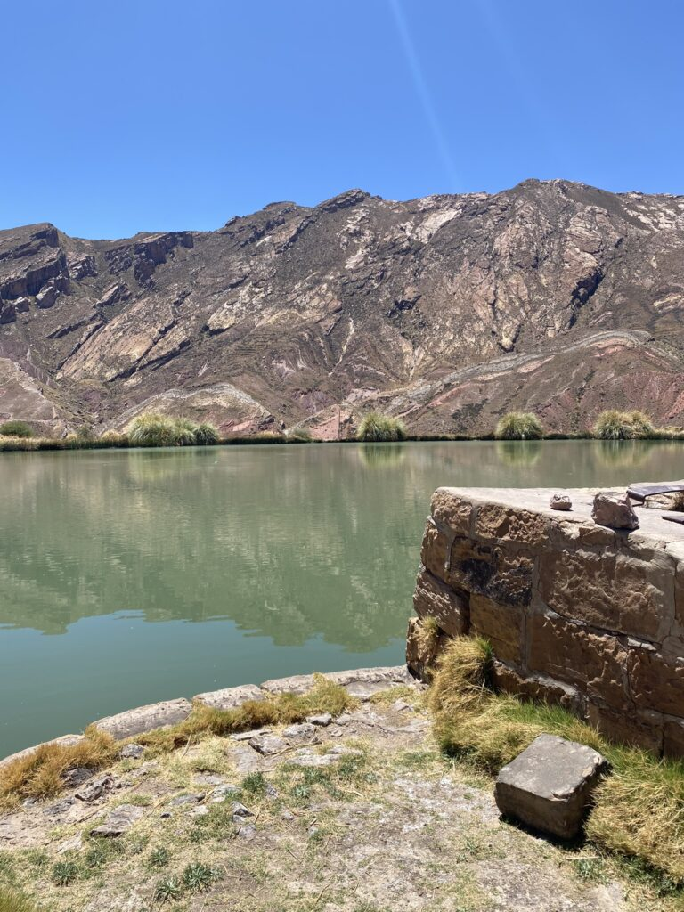
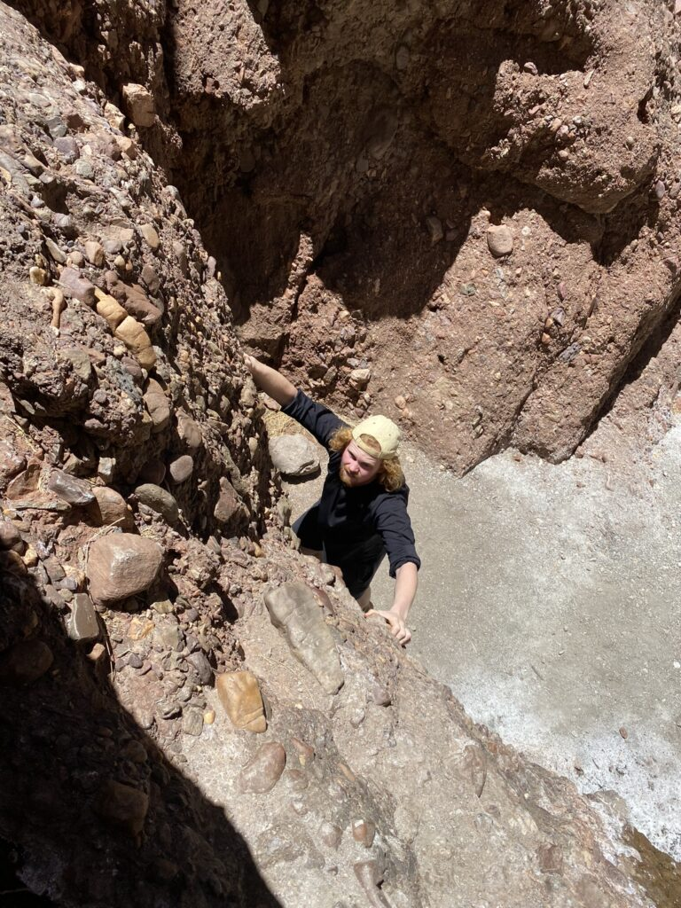
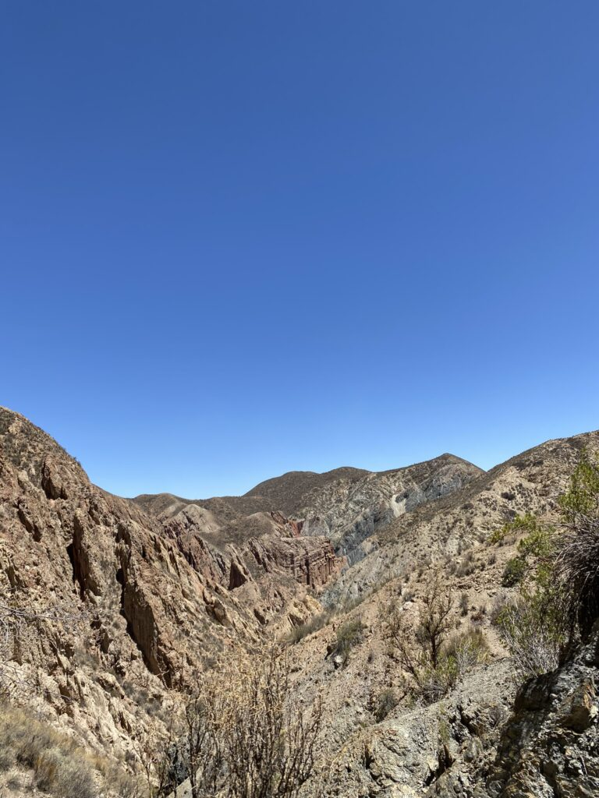
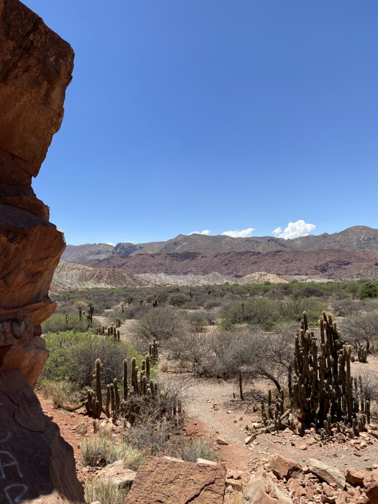

Onze startbasis achter ons latend, krijgt het wilde westen van Bolivia ons in zijn greep. De hoogtemeters spuiten uit onze oren en elk willekeurig rotsblok (of is het toch een berg?) blijkt een kunstwerk op zich. De eindeloosheid aan haarspeldbochten in rammelende busjes nemen we voor lief. Want elke nieuwe stad werpt ons haar unieke zijdes toe.
In een land twee keer zo groot als Frankrijk, bestaat het oosten voornamelijk uit regenwoud, een ecosysteem waar ik me later nog in volle glorie aan zal overgeven. Voor nu banjeren we rond in het westen, waar de droogheid gepaard gaat met een variatie aan berglandschap.
We denken er makkelijk vanaf te komen door met een mountainbike de vallei in de duiken en te vertrouwen op onze Hollandse fietsbenen. Het eerste colletje richting de buitenstad is ons echter al bijna te machtig. Longen spuiten uit de voegen en de benen schreeuwen om meer zuurstof; maar we laten ons niet verslaan door de ijle lucht. Na honderden meters dalen hiken we richting de zeven watervallen van Sucre, ook wel bekend als stroompjes water. Daar verrast de guide ons met een boulder-tour langs de door erosie geslepen lege rivieren, die ondanks de droogte in kleur en diepte variëren. Na een hoge sprong in het meertje verzamelen we de plastic soep die locals werkelijk overal achterlaten en moeten we weer omhoog. Twee uur vechten tegen de stijlheid; verstand op nul en proberen niet te breken.



Die middag zitten we zes uur lang in de bus richting Potosí. De allerhoogste stad ter wereld (4.030 meter) was in de zestiende eeuw zo groot als Londen. De Spanjaarden exporteerden vanuit daar al het zilver van de wereld en maakten van de stad een metropool. Het enige waar het plaatsje nu nog op teert zijn de mijnen, waar zink en lood wordt gewonnen en waar we met gemengde gevoelens induiken. De werkomstandigheden van de soms pas 14-jarige jongens zijn schrijnend. In de verdoezelde lucht rennen de mannen elke dag karretjes vol erts naar buiten. Ze beuken zich door de dag met liters frisdrank, flesjes gevuld met 96% alcohol en door ons meegebrachte (cocaïne-)bladeren, die ze met grote ballen tegelijk in hun wang proppen en de honger-, dorst-, kou-, en vermoeidheidsignalen dempen.
Soms aan de kant springend voor de karretjes in de donkere gangen lopen we langs de groot geschapen duivel van de mijn, aan wie de werkers offeren met wat ze nog over hebben.



Lichtelijk gedesillusioneerd blijven wij nog een dagje langer in de stad dan onze Nederlandse reisgenoot. We worden beloond met een overwacht pareltje. Zonder veel verwachtingen pakken we de bus naar het noorden voor een bijzondere hotspring, waar niemand blijkt te zijn. Na een korte klim baden we ons poedelnaakt in een vulkanisch kratermeer van 30 graden. Onze wittte billen steken af tegen de felle zon in een ongekende panoramische bergketen. Op de terugweg rijdt de bus pal aan ons voorbij op de uitgestorven weg. We komen thuis dankzij een lokale vader die zijn kinderen naar de achterbak bonjourt om ons mee te kunnen nemen.

Helemaal klaar met de bergen ben ik na een vijf uur durende rit naar Tupiza. De eetlust naar een avondmaaltijd is al ver te zoeken als we de stad uit slingeren. Na urenlang bochtjes tellen en honderden meters stijgen en dalen in een volgepropt busje, houd ik de meegenomen omelet voor gezien. Er is eigenlijk maar één reden dat we hier zijn; het natuurfenomeen de zoutvlaktes. Zaterdagvroeg springen we voor vijf dagen in een Toyota land cruiser om ons te wanen in een ogenschijnlijke hemel. Alleen maar zout met hopelijk een klein laagje water, voor een hallucinerend effect. Daarnaast touren we door heel ongeplaveid Zuid-Bolivia met een vulkaanbeklimming als toetje.
Tot die tijd vermaken we ons met de valleien van Tupiza. Het western movie-gevoel borrelt op bij het verlaten van de stad. Zandpaden, rode rotsblokken, cactussen en een canyon die we vol overmoed beklimmen. We wurmen ons door de gleuf waar twee aardplaten elkaar ooit ontmoet hebben en uren later staan we bovenop het grote gevaarte. We twijfelen of we via de andere kant weer in de stad kunnen komen, dus besluiten we om dezelfde weg terug te nemen. Volgens de hosteleigenaar een juiste keuze; het gebrek aan water, energie en kennis van de omgeving was niet mals voor ons geweest.



We dompelen ons onder in een tijdloze, internetloze, mensloze vlakte en zijn even van de radar. Altijd op zoek naar meer. Maar avon-túúrlijk!